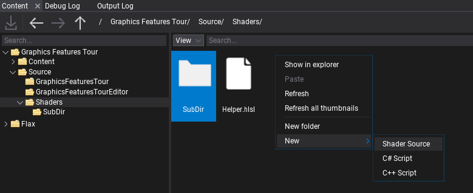

Custom Fullscreen Shader
In this tutorial you will learn how to create and use a simple single-pass full screen effect that will use a Pixel Shader to apply post-process effect.
1. Create new shader
Firstly, create empty file in folder Source/Shaders and name it in a proper way, eg. SimplePostFx.shader. You can do it manually or use Editor and right-click in Content window shaders source folder New -> Shader.

If you're working with Visual Studio then use File -> Generate project file option to ensure new file was added to VS project. Then you can double-click to open shader in code editor.
As you can see the default generated shader contans:
- Copyright note based on project settings (if specified)
- Include directive that included the common types from Flax in-build shaders library
- Constant buffer declaration that contains a single Color variable
- Pixel Shader function named PS_Fullscreen that simply returns a solid color from constant buffer.

2. Using fullscreen shader
Now, before we write anything more advanced, we want to try-out the generated shader from the template to see it in action.
Create C# script and add it to the any actor on the scene. You can use this tutorial to learn how to do it. Then, write the following code:
public class SimplePostFx : PostProcessEffect
{
private GPUPipelineState _psFullscreen;
private Shader _shader;
public Color Color = Color.Red;
public Shader Shader
{
get => _shader;
set
{
if (_shader != value)
{
_shader = value;
ReleaseShader();
}
}
}
public override void OnEnable()
{
#if FLAX_EDITOR
// Register for asset reloading event and dispose resources that use shader
Content.AssetReloading += OnAssetReloading;
#endif
// Register postFx to game view
MainRenderTask.Instance.CustomPostFx.Add(this);
}
#if FLAX_EDITOR
private void OnAssetReloading(Asset asset)
{
// Shader will be hot-reloaded
if (asset == Shader)
ReleaseShader();
}
#endif
public override void OnDisable()
{
// Remember to unregister from events and release created resources (it's gamedev, not webdev)
MainRenderTask.Instance.CustomPostFx.Remove(this);
#if FLAX_EDITOR
Content.AssetReloading -= OnAssetReloading;
#endif
ReleaseShader();
}
private void ReleaseShader()
{
// Release resources using shader
Destroy(ref _psFullscreen);
}
public override bool CanRender => base.CanRender && Shader && Shader.IsLoaded;
public override unsafe void Render(GPUContext context, ref RenderContext renderContext, GPUTexture input, GPUTexture output)
{
// Here we perform custom rendering on top of the in-build drawing
// Setup missing resources
if (!_psFullscreen)
{
_psFullscreen = new GPUPipelineState();
var desc = GPUPipelineState.Description.DefaultFullscreenTriangle;
desc.PS = Shader.GPU.GetPS("PS_Fullscreen");
_psFullscreen.Init(ref desc);
}
// Set constant buffer data (memory copy is used under the hood to copy raw data from CPU to GPU memory)
var cb = Shader.GPU.GetCB(0);
if (cb != IntPtr.Zero)
{
// When using more constants create structure with `StructLayout(LayoutKind.Sequential)` attribute and pass it's address to copy data
fixed (Color* cbData = &Color)
context.UpdateCB(cb, new IntPtr(cbData));
}
// Draw fullscreen triangle using custom Pixel Shader
context.BindCB(0, cb);
context.SetState(_psFullscreen);
context.SetRenderTarget(output.View());
context.DrawFullscreenTriangle();
}
}
It overrides PostProcessEffect class which is used to inject custom rendering code into the in-build graphics pipeline. You can also override the Order and Location properties to have even more control over rendering.
As you can see, the script registers in OnEnable and disposes in OnDisable. Function OnAssetReloading handles shader hot-reloading in editor so it will be called once you edit your shader so it can be updated. The actual rendering is performed in Render method that gets GPU Context, Rendering Context and Input/Output textures to use for rendering.
Then add script to actor on scene and assign Shader property to the auto-imported shader source from Content/Shaders. Then you can adjust the color to see it changing live in the Game view.
3. Using textures
Final step is to perform the actual post-processing of the input image. To do so we need to bind the input texture to the shader and sample it with custom processing.
Here is the updated shader that implements Sharpen filter by sampling nearby pixels and blending with them:
#include "./Flax/Common.hlsl"
META_CB_BEGIN(0, Data)
float2 TexelSize;
float Sharpness;
float Dummy0;
META_CB_END
Texture2D Input : register(t0);
META_PS(true, FEATURE_LEVEL_ES2)
float4 PS_Fullscreen(Quad_VS2PS input) : SV_Target
{
float2 uv = input.TexCoord;
float2 step = TexelSize * 1.5f;
float4 texA = Input.SampleLevel(SamplerLinearClamp, uv + float2(-step.x, -step.y), 0);
float4 texB = Input.SampleLevel(SamplerLinearClamp, uv + float2( step.x, -step.y), 0);
float4 texC = Input.SampleLevel(SamplerLinearClamp, uv + float2(-step.x, step.y), 0);
float4 texD = Input.SampleLevel(SamplerLinearClamp, uv + float2( step.x, step.y), 0);
float4 blur = 0.25 * (texA + texB + texC + texD);
float4 original = Input.SampleLevel(SamplerLinearClamp, uv, 0);
return original + (original - blur) * Sharpness;
}
Now, let's modify the C# script to pass proper constants and texture for the shader.
Add the following code in the script class (eg. instead of the Color field).
/// <summary>
/// Shader constant buffer data structure that matches the HLSL source.
/// </summary>
[StructLayout(LayoutKind.Sequential)]
private struct Data
{
public Vector2 TexelSize;
public float Sharpness;
public float Dummy0;
}
[Tooltip("Sharpness effect intensity (0-10)"), Limit(0, 10, 0.1f)]
public float Sharpness = 5.0f;
Then modify rendering code:
// Set constant buffer data (memory copy is used under the hood to copy raw data from CPU to GPU memory)
var cb = Shader.GPU.GetCB(0);
if (cb != IntPtr.Zero)
{
var data = new Data
{
TexelSize = Vector2.One / input.Size,
Sharpness = Sharpness,
};
context.UpdateCB(cb, new IntPtr(&data));
}
// Draw fullscreen triangle using custom Pixel Shader
context.BindCB(0, cb);
context.BindSR(0, input);
context.SetState(_psFullscreen);
context.SetRenderTarget(output.View());
context.DrawFullscreenTriangle();
As you can see the only changes are calling UpdateCB with our shader data structure and binding input texture to the shader pipeline with BindSR method.
4. See results
The final step is to test the results. When changing Sharpness property from 0 to 10 you can see the effect in action real-time. In case of problems see Output Log window in Editor as it may contain any compilation errors (for both C# script and shader code).